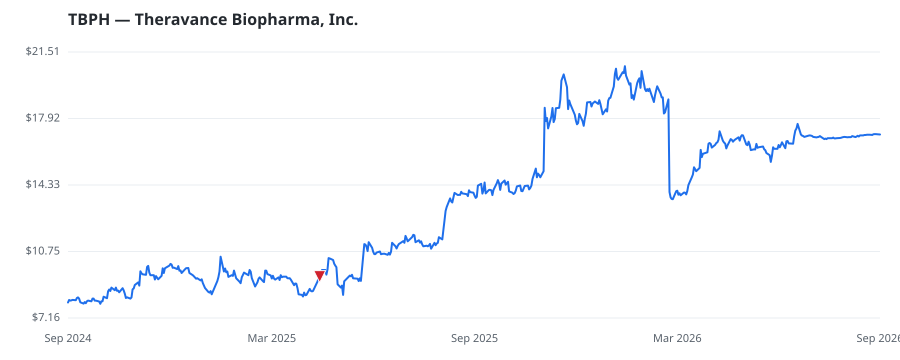

bullish · bearish · n/a — dots: price>SMA10 · SMA10>SMA50 · SMA50>SMA200 · up>down volume (20d)
Pharmaceuticals & Biotech · small cap

Theravance Biopharma Inc is a biopharmaceutical company focused on the development and commercialization of medicines to improve patients lives. The company leverages decades of expertise and has developed FDA-approved YUPELRI (revefenacin) inhalation solution for the maintenance treatment of patients with COPD. Its ampreloxetine Phase 3 clinical study (CYPRESS) for the treatment of symptomatic neurogenic orthostatic hypotension in patients with multiple system atrophy did not meet its primary endpoint. The company operates in a single segment, the development and commercialization of human th PHARMACEUTICAL PREPARATIONS · website
| Revenue | $107.5M | Net income | $105.9M |
|---|---|---|---|
| Operating income | $-3.6M | Diluted EPS | $2.06 |
| Assets | $485.6M | Equity | $296.7M |